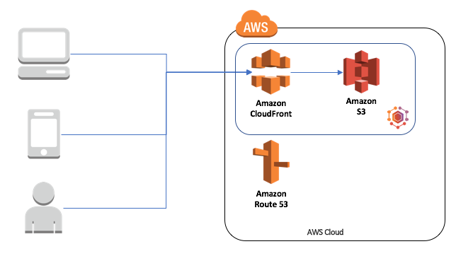
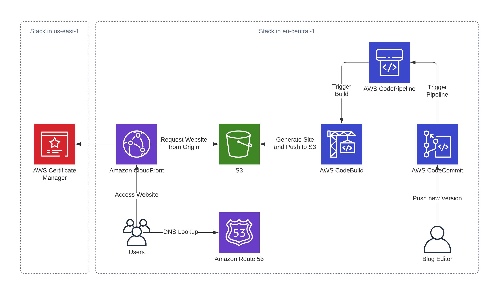

AWS Made Easy is your one stop solution for all AWS Tutorials
Static Websit on AWS
static website don't require you to maintain server,and no ongoing maintance is required for the
three services you'll use to host your website:Amazon S3,Amazon Route 53,and Amazon CloudFront.
Run Static Website in AWS
1.In the Bucket list, choose the name of the Bucket that you want to enable
static website hosting for.
2.Choose Properties.
3.Under Static Website hosting,Choose Edit.
4.Choose Use this bucket to host a website.

Hosting a static website using Amazon Web services(AWS)
Step 1:Creating a bucket.
Step 2:Block Public Access settings for the bucket.
Step 3:Now upload code file.
Step 4:Make public objct.
Step 5:Copy your object url.
Step 6:Check out your website.

S3 In Static-Web
Amazon S3 is an "object storage service offering industry-leading scalability,data availability,
security,and performance".
Static Websites on the other hand are static files. there is no code that runs on the server when the page is served up to the visitor's browser.this means there is no opportunity for an attacker to gain access to the web server through vulnerabilities in the site's code.
.jpeg)
 >
>